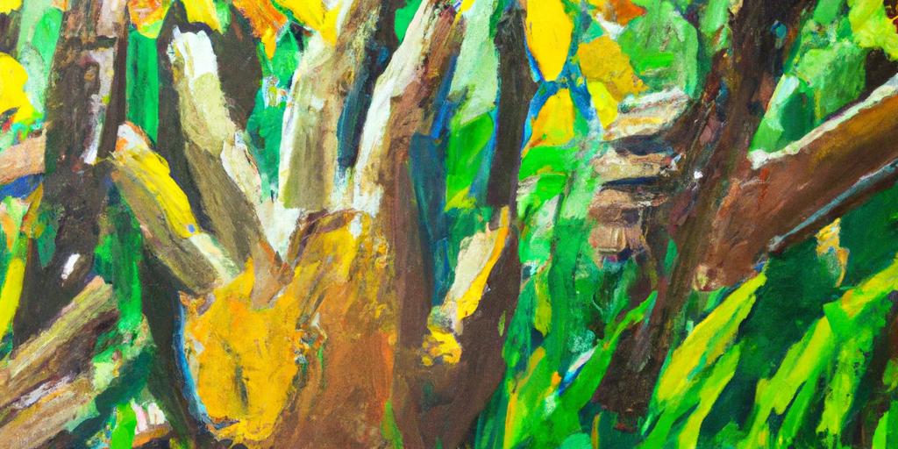

Essential Skills for Harmonious, Rich and Inspiring Collaborations
Collaboration is about co-creating. Fundamentally motivation is about personal creation and active support. Personal creation is about one's own expression, active support is about noting what we like and can support (the cooperative response), rather than voicing concerns and reservations (the adversarial response).
Fulfilling collaborations require some relational & observant skills. Here I compile a list of these essential skills. This list is inspired by Laird Schaub's work on Cooperative Groups.
Note which skills do you, and people you are collaborating with, possess and which needs some development.
- Self-Awareness: The ability to notice and articulate clearly what you think, what you feel, your skills & abilities, your privileges, needs & desires, and where you need support.
- Listening: Hearing accurately what others say, and be able to communicate so that the speaker knows & feels that they are heard.
- Emotional Resiliency: Be able to function reasonably in presence of non-trivial distress in oneself and others.
- Active Intelligence: To be able to shift perspectives through the lens of others and find creative solutions to conflicts.
- Positive Regard & Holding Complexity: Ability to assume good intent and see the underlying motivations in other's creativity. Ability to hold complexity of multiple beliefs and motivations.
- Accountability & Responsibility: Ability to be own one's stuff, ability to see choices, and ability to respond.
- Group Awareness: Ability to reach out and offer to others, before waiting for others to reach out.